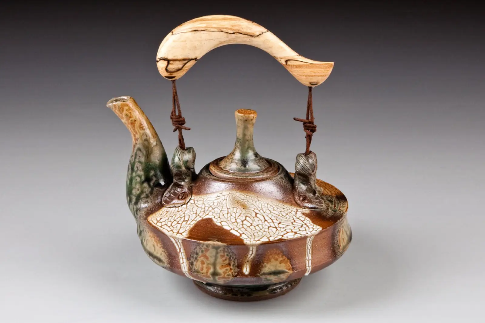
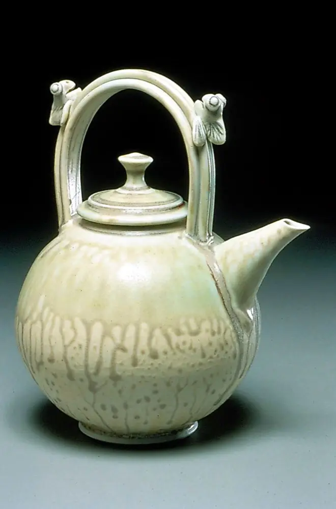
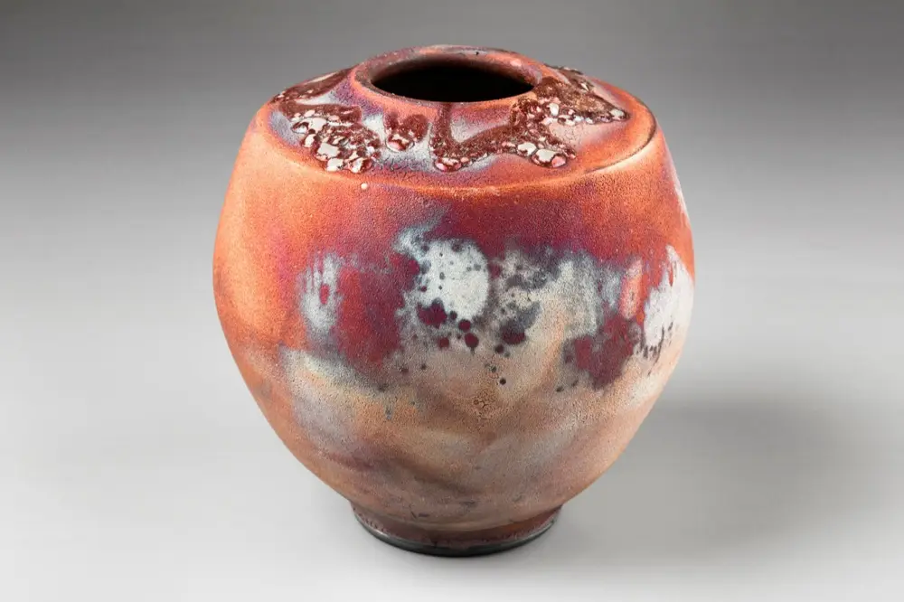
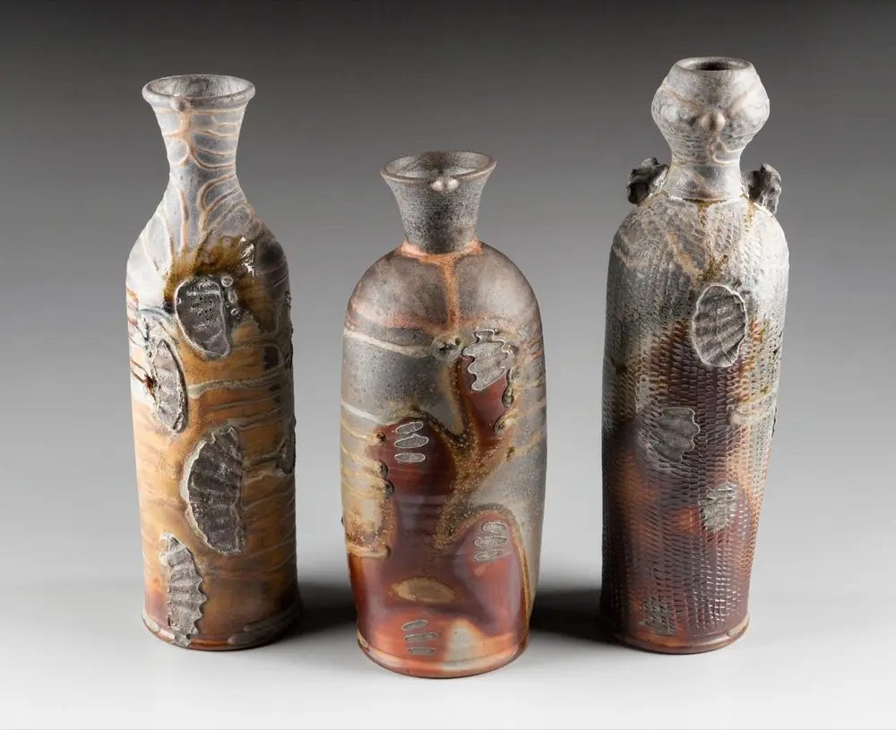
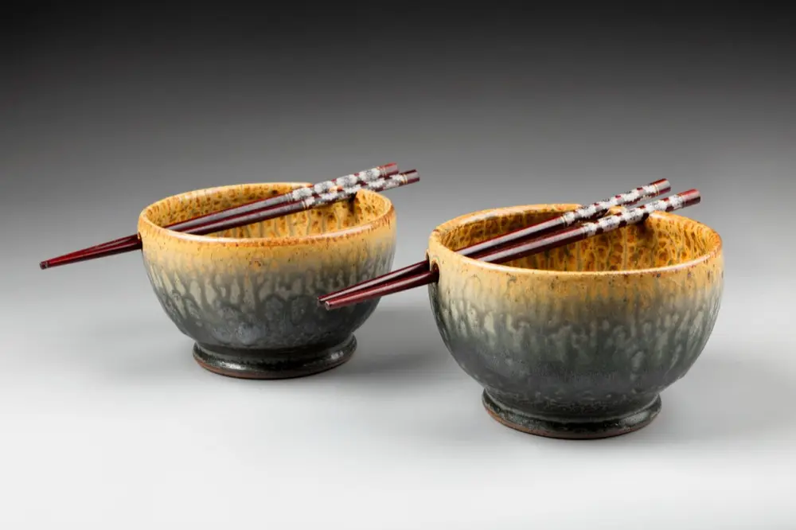
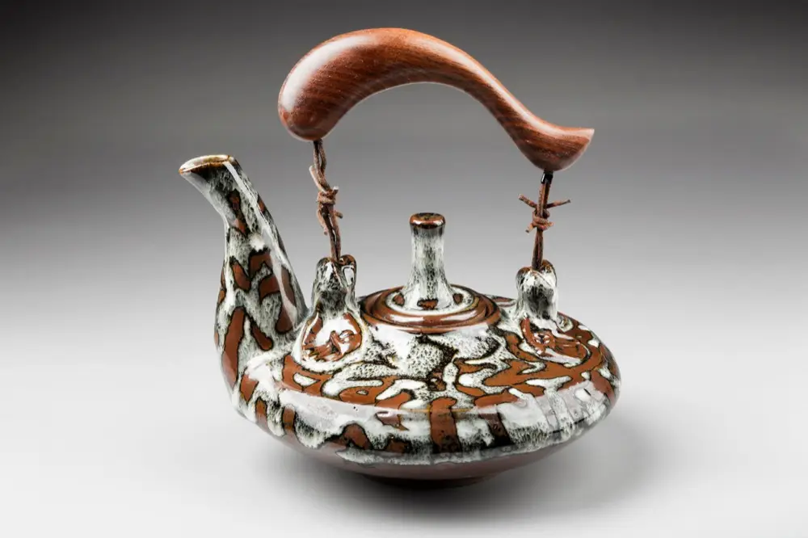
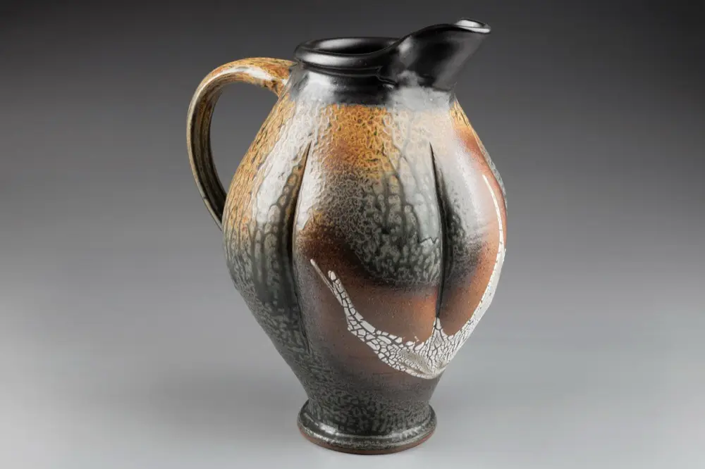
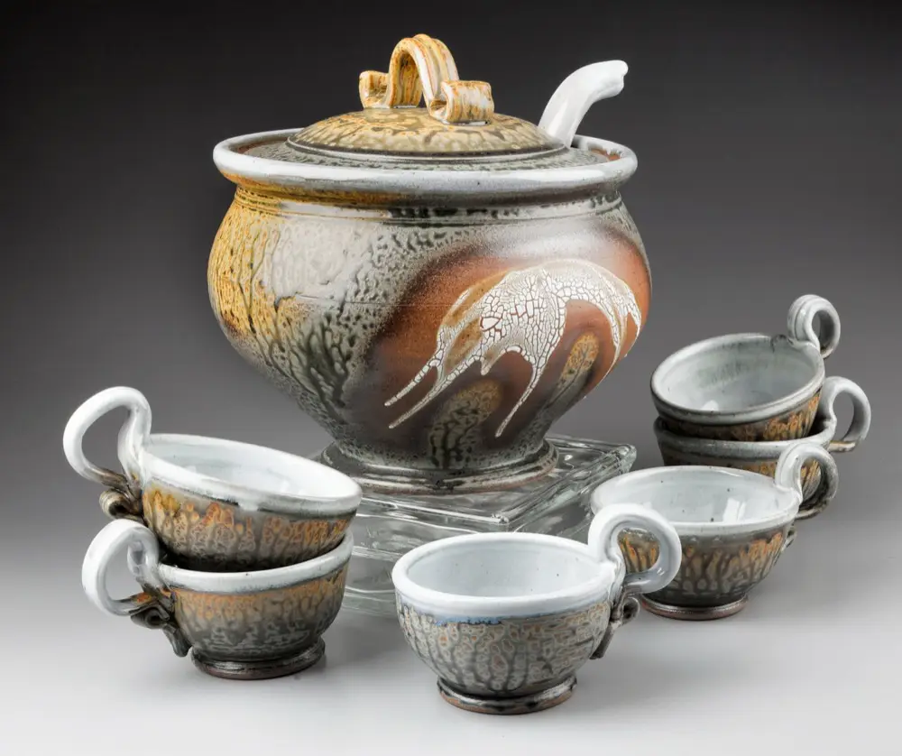
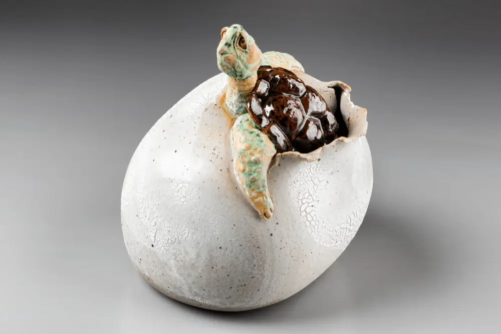
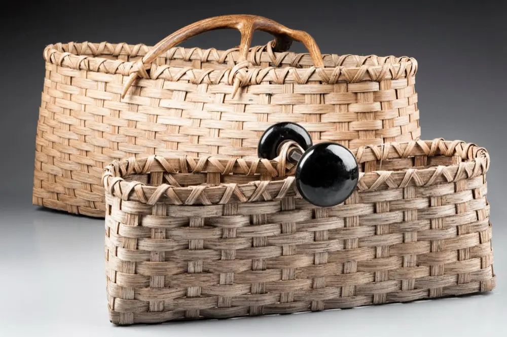

Pottery by Larry Spears
Thrown by hand, finished by fire
Functional stoneware and porcelain, raku and wood-fired pieces. Each firing creates subtle variations, so the work is ever-changing. See it at the Gallery in a historic building in downtown Nashville, Indiana.


“My work continues to evolve around the simple correlation between form and function. Hopefully the end result is a piece that can become a part of, and enrich, someone’s lifestyle.”
Larry Spears
A primarily self-taught potter, Larry has been working at his craft for over 30 years. All of his work is thrown, much of it adorned with hand-built appendages, then reduction or wood-fired. He brings a rich color palette to his wares with a wide variety of glazes and glazing techniques, and his work has been exhibited at numerous galleries in the USA.
The pottery
Teapots, bowls, pitchers, vessels and serving pieces. Mostly functional forms, in clay bodies, glazes and firings Larry keeps experimenting with.

Raku
Woodfire
Bowls
Teapots
Pitchers
Serving piecesReduction
Stoneware and porcelain thrown on the wheel, glazed in a rich palette and reduction-fired.
Wood-fired
Pieces fired with wood, where each firing creates its own subtle variations.
Raku
Raku-fired vessels, one more of the firing methods Larry likes to experiment with.
A family gallery in downtown Nashville
Spears Gallery is in a quaint, historic building in downtown Nashville, Indiana, beside the Nashville House Restaurant. It primarily features the pottery of Larry Spears, along with the fine art photography of his son Kyle Spears and the sculptural ceramic works of his son Tyler Spears.
The Gallery is also home to work by other fine craftsmen from the Brown County area and beyond: wood, jewelry, basketry, metal, paintings and more.
Please plan to stop by on your next visit to scenic Brown County.


Made to be used
Online sales are hosted through Larry’s Etsy shop. If you would like a piece that isn’t there, call or email and the Gallery will snap some photos and send them to you. Major credit cards accepted; shipping for a nominal fee.
- Lead-free
- Dishwasher safe
- Microwave safe
- Conventional oven safe
Shows and visits
Larry’s work is shown primarily in his studio in Nashville, Indiana, and at juried art shows during the year. The Gallery is the surest place to see the whole range, open daily from 10 to 5. Hours may vary during the season, so feel free to call ahead.
Where is Larry showing next?
Send a quick email and Larry will tell you which art shows are coming up next, and where to find his booth.
Visit Spears Gallery
Downtown Nashville, Indiana, right beside the Nashville House Restaurant. Open daily 10 to 5; call if you are coming in the busy season, as hours may vary.
- Where
- Beside the Nashville House Restaurant
Downtown Nashville, Indiana - Hours
- Open daily, 10 a.m. to 5 p.m.
- Phone
- 812.988.1286 or 812.988.1287